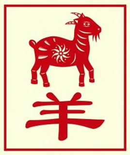

The Chinese Zodiac: Goat

- Fixed Season: Summer
- Fixed Direction: South-Southwest
- Fixed Element: Earth/Ying
- Associated Sun Sign: Cancer
The sign of the Sheep produces a person who is not overly fond of sudden changes or impulsive decisions. Rather, the tend towards the opposite end of the spectrum, finding comfort in both repetition and well-laid plans. Luckily for them, they have a natural inclination towards this type of work and are quite skilled at pulling together actions and events in a manner that flows naturally. Which allows both Sheep and anyone with them to enjoy a smooth and unhindered ride over life's many tiny bumps.
As much as the Sheep can improve a person's life, however, they are also protective about who they let into their inner circle. Not just anyone can get to know someone born under the sign of the Sheep. Rather, they must prove themselves steadily over time, through kind gestures and loving support, until the Sheep finally see that they are someone who can be trusted. Otherwise people are often left viewing things at a distance, not quite knowing why they feel distant from the Sheep, but feeling it strongly all the same. It is the Sheep's choice then to weigh their two main paths, between a safe lifestyle with few close friends, or a much more social way of life with its own inherent risks.